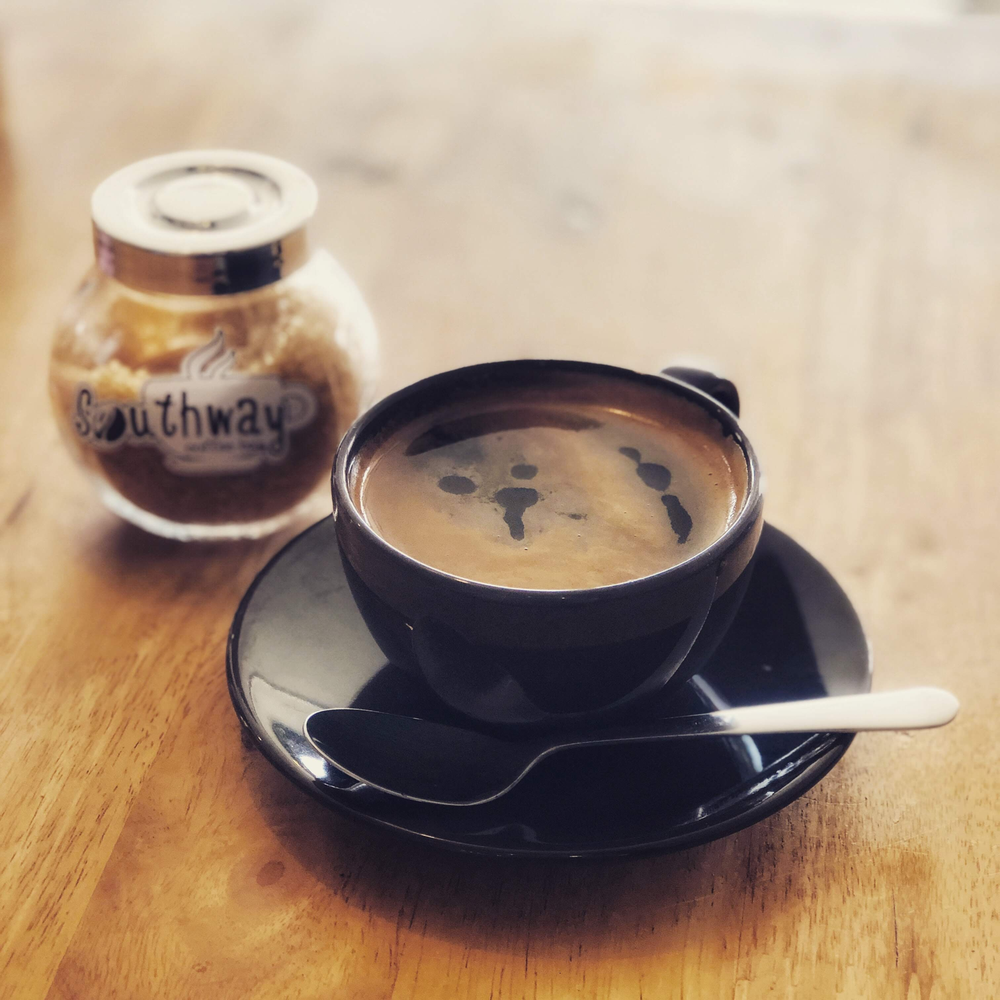

Espresso is popular in many parts of the world, especially in Italy, where it originated. It's the foundation of many coffee culture traditions and a favorite for coffee enthusiasts who enjoy the bold and intense coffee flavor.

A cappuccino is a popular coffee beverage that originated in Italy. It's known for its rich and creamy flavor, created by combining espresso, steamed milk, and milk foam. Here's how to make a classic cappuccino.

An Americano is a simple and popular coffee drink that's essentially diluted espresso. It's made by adding hot water to a shot or more of espresso, resulting in a coffee with a flavor profile similar to drip coffee but with the strength and depth of espresso.